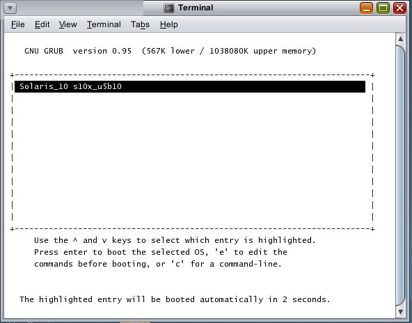
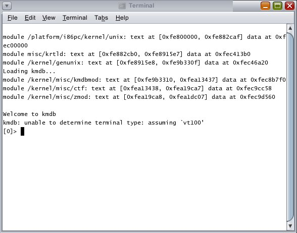
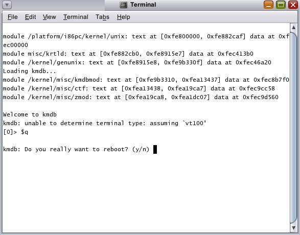
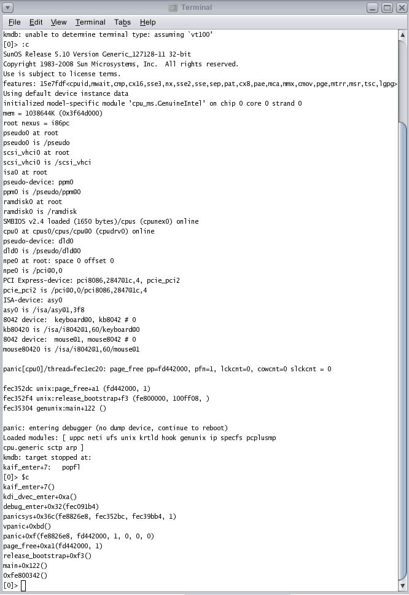

Our partners do a fair amount of business supplying ruggedized Solaris-powered Panasonic Toughbook computers to their US government/military customers. As a regular part of the product cycle, Sun usually works with both the integrators and Panasonic to assure that as new models become available, Solaris runs on these systems properly. Furthermore, when we can get our grubby little hands on the systems, we'll run them through our certification suite of tests and formally place them on the Solaris Hardware Compatibility List. As an example, here's the certification report for one of the versions of the Panasonic Toughbook CF-29.
Panasonic recently introduced a new version of the Toughbook CF-30 (referred to as revision F) which tweaks some of the computer subsystems resulting in an all-too-familiar scenario: namely, these differences cause the current version of Solaris to fail to install. Note: Solaris is not alone here, all Operating Systems must continually play this cat and mouse game to support the latest hardware/firmware advances.
Our initial hypothesis lead us to believe that the problem was related to the introduction of the Intel ICH8 SATA chipset. So we called on some of our Solaris I/O experts, based out of Sun's Beijing office, to take a peek at what was going on. As the laptop is currently in New York, we needed a way for folks half way around the world to have access to this system. There are lots of mechanisms available to remotely diagnose systems, what's somewhat unique here is the following: (1) the diagnosis takes place very early in the boot stage, way before any windowing or networking is set up and (2) The system in question is a laptop, not a server, where things like Lights Out Management (LOM) service processors are non-existent.
The solution here was to utilize decades old RS-232 technology
combined with some of features of the GRUB
bootloader. Here are two requirements needed:
Here's how to set up the remote console environment:
1. A null modem cable must be physically connected between the remote host and target. The most common cable required will be a DB-9 female-to-female connector. Your configuration may vary.
2. Check the BIOS of the remote host and target and make sure serial ports are enabled.
3. Running Solaris on the remote host, we'll be using the tip(1) command to access the target via serial port. Edit the /etc/remote file and look for the hardwire: entry. Modify it to look like this:
hardwire:\\
:dv=/dev/term/a:br#9600:el=\^C\^S\^Q\^U\^D:ie=%$:oe=\^D:
4. As part of setting up a jumpstart install for the target, a series of files are created in the /tftpboot directory of the jumpstart server. Under /tftpboot, there should be a custom menu.lst file for each managed install, suffixed by the unique network MAC address of the system in question. For example, the network MAC address for the CF-30 in question is 0:b:97:db:c0:97. The related /tftpboot file for the CF-30 turns out to be /tftpboot/menu.lst.01000B97DBC097. As your target will have a different MAC address, it's menu.lst file will have a different suffix in the /tftpboot directory. Edit that custom menu.lst file (for example, /tftpboot/menu.lst.01000B97DBC097) to look as follows:
default=0
timeout=30
serial --unit=0 --speed=9600
terminal serial
title Solaris_10 s10x_u5b10
kernel /I86PC.Solaris_10-1/multiboot kernel/unix -B console=ttya,install_media=192.168.1.5:/export/s10x_u5b10 -vkd
module /I86PC.Solaris_10-1/x86.miniroot
The key modifications here involve (1) inclusion of the serial --unit=0 --speed=9600 and terminal serial lines plus (2) additional arguments added to the kernel directive. Grub is very fussy about the order and placement of arguments; playing around with these will likely change grub's behavior.
5. From the remote host, access the serial console of the target by issuing:
$ tip hardwire
6. Inside a terminal window, here's what the serial console looks
like, after the system has been power cycled and runs through the
POST
sequence:

After the miniroot is loaded, you'll be presented with an mdb prompt and a screen which looks like this:

You can now issue mdb commands to diagnose. In this scenario you should also be able to reboot the system without any other manual intervention, like this:

Here's what issuing the mdb commands ':c' and '$c' look like in this environment. From this simple trace we can ascertain that the SATA drivers were never even loaded. Turns out this is likely a VM problem. Here's the filed bug report.
